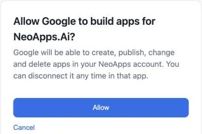

Claude
- Open the Claude desktop app: Settings → Connectors → Add custom connector.
- Paste
https://cloud.neoapps.ai/mcp - Click Connect and sign in to NeoApps. It also works in the Claude mobile app.
Pick the assistant you already use.
You'll need: a NeoApps account. Confirm your email and you get 14 days free, no card. Pick a plan when you're ready (promo codes go in at checkout). Connecting opens a NeoApps page where you sign up or sign in.
Paste the NeoApps link where your assistant adds connectors or apps, then sign in. That's the whole setup.
Then sign in to NeoApps when asked. Your assistant's screen looks similar.
https://cloud.neoapps.ai/mcphttps://cloud.neoapps.ai/mcpcodex mcp add neoapps --url https://cloud.neoapps.ai/mcphttps://cloud.neoapps.ai/mcp and leave Client ID empty.@NeoApps Cloud and describe your app.A note-taking app, built and published from a Gemini chat in about 5 minutes.




Use the NeoApps connector. I want to build [describe your business app]. Ask me about users, data, approvals and permissions, then show me the preview and wait for my review. After I approve, publish it, check it's live and give me the link. Never ask me for passwords, card numbers or API keys in this chat.
Add your team and customers in Members, with the role they need.
Ask your assistant for the AI settings link. Paste your own key there, never in a chat.
Tell your assistant what to change. Review, publish. Your data stays.
Go to cloud.neoapps.ai/recover.